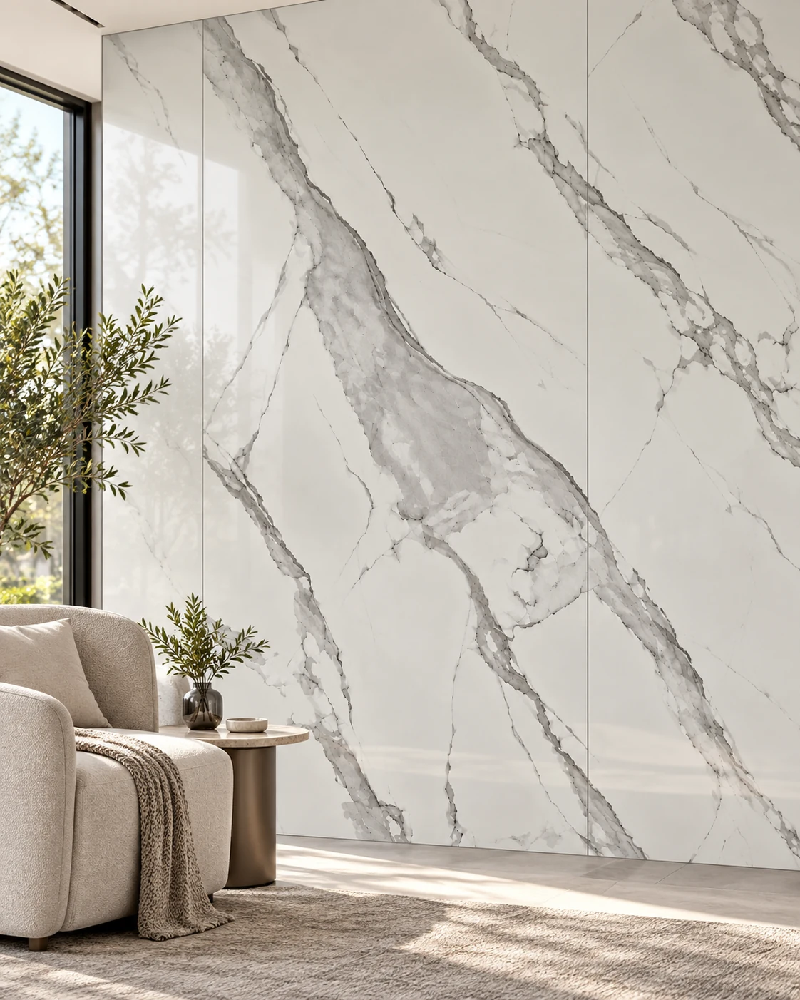

Placa UV símil mármol
Placa UV símil mármol Calacatta Premium
Placa decorativa de PVC con terminación UV, diseño Calacatta Premium, para revestir paredes interiores. Su formato permite cubrir superficies amplias con menos uniones que las placas pequeñas. Se instala con adhesivo sobre una base firme, plana, limpia y seca. No es autoadhesiva. Consultanos por las medidas y la terminación de la partida disponible antes de calcular la cantidad.
- Diseño / color
- Calacatta Premium
- Material
- PVC con terminación UV
- Aplicación
- Paredes interiores
- Presentación
- Por placa
- Instalación
- Con adhesivo compatible; no autoadhesiva
Disponibilidad FORMA: Consultar disponibilidad
Confirmamos precio, disponibilidad y entrega antes de cerrar el pedido.
Instalación y preparación
Verificar que la base esté firme, plana, limpia y seca. Utilizar adhesivo compatible con PVC y con el soporte, respetando las indicaciones del fabricante. Confirmar detalles de cortes y encuentros antes de colocar.
Cuidado y mantenimiento
Limpiar con paño suave húmedo. Evitar abrasivos y solventes.
Antes de elegir
La imagen es una referencia del proveedor. Confirmar medidas, espesor, acabado y disponibilidad de la partida antes de cerrar el pedido.